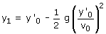
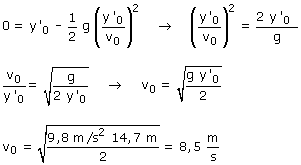

En el primer apartado de este problema hemos calculado la posición donde se produce el choque:  Si y1 fuera negativo significaría que el choque se produciría por debajo del suelo cosa obviamente imposible. Entonces el caso límite corresponde al caso en que el paréntesis vale cero:  |